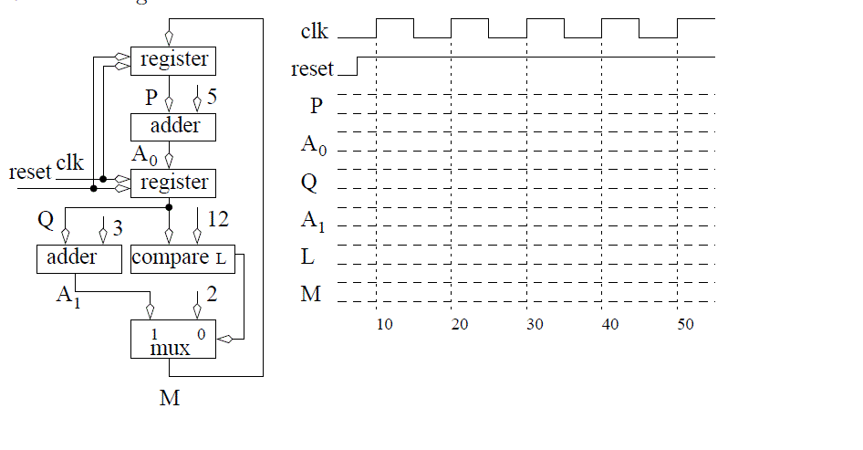

Homework #7
Guidelines
- Complete your work on green engineering paper
- Staple in upper left if more than one sheet.
- Format the top of the first sheet as follows.
| ECE 383 | [Your name] | HW#9 | [Due Date] | [Page ref]
|
The page reference for the first page of a four page document would be 1/4, the
second page of this document would be labeled 2/4 and so on.
- Do not write on the back side of the green engineering paper
- Digital copies of all code, testbenches, and waveforms will also be submitted via BitBucket.
-
Complete the timing diagram below assuming that the register is
positive edge trigger and has an asynchronous active low reset.

- In an ideal world when the button on the ATYLS board were pressed,
the output go solidly from 5 volts to ground. Unfortunately, push-buttons
are mechanical devices with contacts that literally bounce when contact
is made and broken. This bouncing will cause the voltage to oscillate
several times times in quick succession.
Switch bouncing is a major problem in digital circuits because the
circuit sees the signal change several times and may take actions appropriate
for each of these bounce values when the user only intended a single actions
to take place. Your task in this problem is to implement a version of a clever
technique used by one of the cadets in our class to solve it for Lab 1.
Design a FSM machine that looks at left and right directional buttons and counts up
once only after a two button sequence is pressed. The sequence is
left button, press and release and the right button is press and release. Use
the generic counter linked in lecture 10 to instantiate a 3-bit counter.
Your testbench should show the following button press sequence:
left (press then release), brief pause,
left (press then release), brief pause,
right (press then release), brief pause,
right (press then release), brief pause,
left (press then release), brief pause,
right (press then release) brief pause.
The brief pause between the presses is meant to simulate a switch bounce
when, for example, one left button press is followed immediately by
another left button press. In order to
effectively simulate this phenomena, the brief pause must be longer
than a single clock cycle.
Turn in:
- The state diagram for your FSM (neatly hand drawn is fine).
- Hardcopy and digital copy of the VHDL describing your FSM
- Hardcopy and digital Image of your testbench output in Isim showing the
following signals - remove all other signals.
- clk
- reset
- FSM state
- left and right button
- Count value